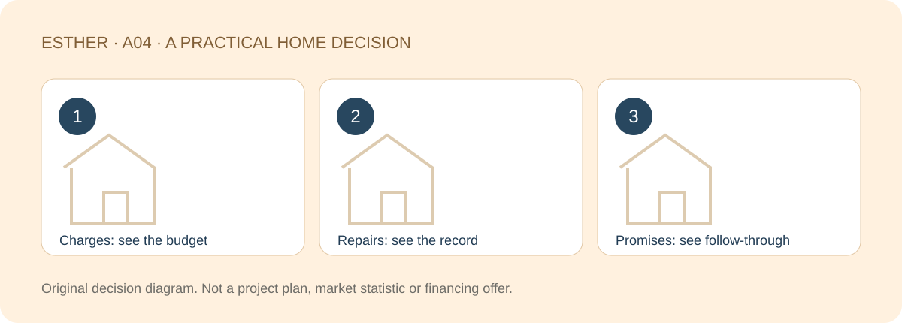

A HOME THAT FITS YOUR LIFE
Buying a RM1 Million Condo in JB: Why Building Management Matters
Sources checked：2026-10-26 · By Esther, Real Estate Negotiator

Direct answer
Facilities help you picture weekends; building management shapes ordinary days. For a condo around RM1 million, look beyond the fee and ask who is responsible, what the records show and how problems are followed through. The price is a discussion frame, not evidence of quality or a live quotation.
Browse article sections
Turn “well managed” into questions you can check
How are access issues handled? Is there a clear way to report faults and follow up? Are visitor, parking and waste arrangements understandable? A tidy visit is a useful observation, but it cannot prove years of consistent performance.
For an occupied building, observe relevant everyday conditions with permission and ask about the process behind them. One resident’s complaint is not a full assessment; the absence of shared complaints is not proof that everything works either.

Ask for four kinds of evidence
| Evidence | What it helps you assess | What it does not prove |
|---|---|---|
| Relevant budget and charge breakdown | Planned routine spending | Higher fees mean better service |
| Accounts and fund information lawfully available | Financial records and funding pressure | A balance guarantees no future expenditure |
| Relevant meeting minutes and resolutions | What was raised and decided | A verbal promise means work is approved |
| Repair records and preventive plans | Progress and follow-through | New-looking equipment needs no upkeep |
Access depends on your status and the applicable arrangements. Work through the seller, management and solicitor rather than assuming every buyer may demand every record. KPKT’s strata handbook is background on roles and funds, not a certification of a particular building.
Do not use operating history to describe an unbuilt project
A new development may not have years of operating accounts or repair records for the building you are buying. Review the proposed management arrangement, charging basis, facility scale and handover stage. Mark future performance as untested. Another building’s results cannot guarantee this one.
For an occupied property, identify the responsible body and the period covered. Developer, JMB and MC responsibilities depend on the actual stage. A screenshot without a year, building or context is weak evidence for a long-term decision.

Include facilities you may rarely use
Shared facilities and common areas can create costs even if they are not part of your own weekend routine. Ask about applicable charges, fund arrangements, maintenance plans and any relevant proposed or approved additional levy. Do not assume today’s fee is fixed forever.
Act 757 provides the management framework; responsibilities and applicable documents need property-specific checking. Our existing guides explain maintenance charges and sinking funds. This article focuses on the evidence behind management, rather than repeating a fee calculation.
Follow one issue through
With permission, trace one relevant repair from reporting to its current status and next step. A delay does not automatically establish poor management; some work needs specialist assessment. Compare the quality of the record and follow-up, without publishing residents’ personal information or treating an unverified complaint as fact.
Separate confirmed facts, unknowns and deal-breakers
- Confirmed: document dates, responsible body, applicable charges and current rules.
- Unknown: missing records, unresolved repairs or future operating performance.
- Deal-breakers: access, parking or upkeep conditions that conflict with your daily needs.
Missing information is not automatic proof of poor management, but it should not disappear from your decision. A million-ringgit budget deserves the same disciplined checks. Choose with a clear picture of the conditions you can accept, not just the facilities you can photograph.

Frequently asked questions
Do higher maintenance charges mean better management?
No. Compare the budget, execution, records and everyday conditions rather than treating the charge as a quality score.
What if a new project has no repair history?
Review proposed arrangements and their basis. Keep future performance marked as untested, not guaranteed by other projects.
Can a prospective buyer obtain all accounts directly?
Not necessarily. Confirm the lawful process through the seller, management or solicitor for the relevant stage and status.
Can I avoid facility costs if I do not use the pool?
Do not assume so. Check the applicable shared-cost responsibilities and project documents.
Discuss specifications and long-term holding conditions
Share the part of your home search you want to clarify, your budget range and a suitable time to chat. A viewing or appointment is confirmed only after arrangements are agreed.
Discuss my home search with EstherThe editable message identifies this guide. Nothing is sent until you choose to send it. No identity or financial documents are needed in an initial chat.Sources and scope
Checked：2026-10-26。Practical comparisons and checklists are original editorial guidance, not market statistics, a professional inspection or personalised legal, tax or financing advice. Project details and transaction-specific requirements need separate verification. Historical source dates do not establish a new policy announcement. No loan approval, rental, appreciation, search ranking or AI citation is guaranteed.